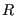

Consideremos el circuito RLC serie sin fuente de la siguiente figura
Figure 2:
Circuito RLC sin fuente
|
|
Suponiendo valores de , y constantes, derivaremos a continuación una ecuación diferencial de segundo orden que describe el comportamiento del circuito de la figura anterior. Dado que los tres elementos del circuito están conectados en serie, la corriente indicada para el capacitor, con la dirección adecuada es también la corriente en la inductancia y en el resistor. De la ley de voltajes de Kirchhoff, tenemos que
donde es el voltaje entre las terminales de la resistencia,  es el voltaje entre las terminales del capacitor, y es el voltaje entre las terminales del inductor. Utilizaremos el voltaje (del capacitor) como variable dependiente para nuestra ecuación diferencial de segundo orden. La relación entre el voltaje y la corriente es
es el voltaje entre las terminales del capacitor, y es el voltaje entre las terminales del inductor. Utilizaremos el voltaje (del capacitor) como variable dependiente para nuestra ecuación diferencial de segundo orden. La relación entre el voltaje y la corriente es
por lo que por la ley de Ohm, para usaremos la expresión
Por último, como la relación entre el voltaje en la inductacia y la corriente está dada por
Sustituyendo (8) en (10),
Ahora, sustituyendo (9) y (11) en la ecuación (7),
Reacomodando los términos de la ecuación (12) obtenemos
 |
(13) |
2020-05-07